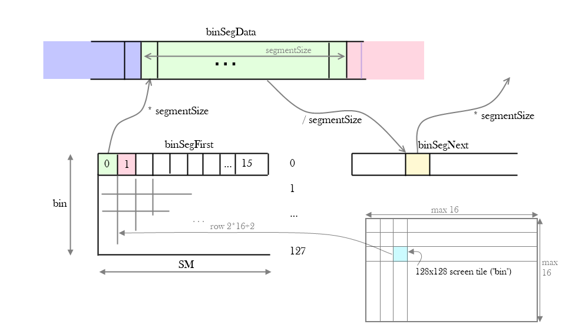
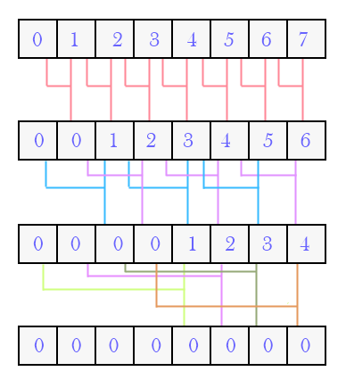
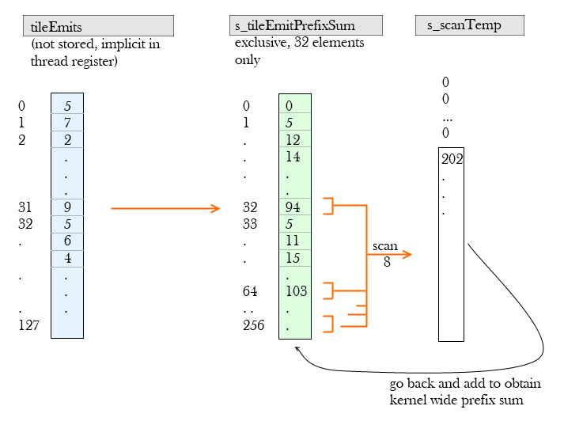

In the quest to demistify the high performance magic of CudaRaster by Samuli Laine and Tero Karras, it's time for a closer look at the coarse rasterization stage. As the paper explains, this stage merges the per-bin queues, and adds the triangles to a queue for each coarse tile it overlaps. Thanks to the authors' generous open-sourcing of the code, we can take a look at how that works exactly.
The preceding stage, binRaster, was discussed earlier.
I've uploaded an annotated "personal copy" of coarseRaster.inl; it is taken from version 1.1 but with some extra comments that I added as I worked my way through it. So just to be very clear, I've only added some comments which may or may not be true, helpful or interesting. Otherwise I've made no changes, and the file is most definitely still entirely...
* Copyright (c) 2009-2011, NVIDIA Corporation
* All rights reserved. [...]
* THIS SOFTWARE IS PROVIDED BY THE COPYRIGHT HOLDERS AND CONTRIBUTORS "AS IS"
Hopefully it helps understanding the code -- but to use this in your project, just go to the source. Comments that I've added are tagged with "--bpe". There are a few magic bits that I've commented but aren't discussed in this post.
Overview
Digging through the code (and this post) probably makes more sense if you've read the paper. I want to focus on the smarts that are in the actual implementation.
The overall flow of the algorithms is as follows:
Prelude: sort the 128x128 bins in descending order of triangle count;
Pick a new bin to process;
Grab at least 512, at most 1024 triangles from the bin's 16 input queues, taking care that order is preserved;
For each triangle, set the bits for the coarse tiles that it overlaps;
Count how much space each coarse tile needs to write its overlapping triangles; allocate segments;
Write out the triangle indices for each coarse tile it overlaps;
The good news is that several pieces of code are quite similar to the binRaster stage, for example the triangle rasterization, and clever popc-based prefix sums.
The unfortunate news is that innocent looking steps, like "write out the triangle index", are surprisingly involved.
Before digging into bit twiddling and prefix summing, it's important to understand the overall data layout. Both input and output have the same structure -- a linked list of segments.
The binRaster phase made a queue for each bin for each SM/CTA. Thus the input for coarseRaster, once we've picked a bin, is 16 queues with triangles, as pointed at by binSegFirst.
The output however is a single linked list per coarse tile. That, at least, simplifies things a little bit. Here's a refresher, with a typo, of the binRaster output, which is this stage's input.

Correction: there are a maximum of 16x16 bins, so there are 256 rows in binFirstSeg, not 128.
The input segments are 512 triangles per bin.
The output segments are 32 triangles per coarse tile.
There are (up to) 16x16 bins of 128x128 pixels each.
There are 16x16 coarse tiles per bin of 8x8 pixels each.
//--bpe Output storage for building per-coarse-tile linked-lists of segments. Each segment is: // CR_TILE_SEG_SIZE = 32 triangles big, // CR_TILE_SEG_LOG2 = 5
S32* tileFirstSeg = (S32*)c_crParams.tileFirstSeg;
S32* tileSegData = (S32*)c_crParams.tileSegData;
S32* tileSegNext = (S32*)c_crParams.tileSegNext;
S32* tileSegCount = (S32*)c_crParams.tileSegCount;
Prelude: sorting bins
For efficiency, bins are processed in descending order of triangle count; the fullest bins are handled first.
There are only a maximum of 16x16 bins. However their triangles were processed by 16 SMs, so each bin comes with 16 "total" triangle counts, one per SM. To figure out the number of triangles per bin, we must sum these 16 counts for a true total. The first 16x16 threads in every kernel do this summing, all coming up with the same answer. This is stored in a local array s_binOrder and sorted. Now every persistent kernel can use atomicInc to grab a bin, and get started merging its 16 queues. Please see the code for more detailed comments.
Step One: Merging bin queues
Once we have our bin index in binIdx, we want to fill s_triQueue with at least 512 triangles. This queue can hold up to 1024 elements, so even if the next bin segment that we copy over is completely filled at 512 elements, it is guaranteed to fit entirely in the remaining queue space. Thus we don't have to worry about partially processed bin queues:
//--bpe we have room for 1024 triangles. If the number of triangles ready for consumption // is <= 512, we have at least room for 512 more. So we know that even if the next // segment we process is completely full, it will fit in the queue, and we never have // to worry about partially consumed queues. We merge the whole thing, or we leave // it for next time. // Note that the read and write pos are never wrapped around; we have a circular queue, // but the 'wrapping' is done with a 'modulo 1024'; when actually indexing into the queue.
To figure out which of the bin's 16 queues should copy its segment into s_triQueue, it suffices to look at the first triangle of each queue. The lowest index is the one whose segment is next if we wish to preserve input order. Finding the minimum of 16 elements can be done in log(N) steps without synchronization:

Once the correct queue is identified, there is some logic to walk the linked list that is similar in spirit to binRaster, so let's just skip ahead to what its outcome is:
s_binStreamSelectedSize = how many triangles to copy into the queue;
s_binStreamSelectedOfs = where to copy them from;
s_binStreamCurrSeg[warp] = points to the _next_ segment that needs to be consumed;
s_binStreamFirstTri[warp] = value (not index) of first triangle of the _next_ segment to be consumed;
s_triQueueWritePos = position in the queue where the _next_ segment needs to be written to. Thus the segment that we just decided on needs to be copied to:
During the actual copy of triangles from the bin's selected segment to our triQueue, the bookkeeping appears to be in reverse: thread 511 copies triangle 0, 510 handles 1, and so on -- without reversing the triangle order itself, of course. I'm not sure why this might be -- better write coalescing? Perhaps I'm reading it wrong.
Step Two: Bit rasterization
The input s_triQueue contains at least 512 triangles (except if the input was exhausted). So the kernel switches to one thread per triangle and rasterizes its coverage as bits into s_warpEmitMask.
Most of this code is similar to binRaster, in fact it is slightly simpler because some special cases are gone; more on that in a moment. Let's first take a closer look at the memory layout of the shared data.
We're rasterizing up to 512 triangles into 16x16 coarse tiles. So for each coarse tile, we need 512/32 = 16 words of 32 bits. Yet, these are not stored contiguously; instead of a 16x16 array where each element is 16 32-bit words, we have 16 consecutive instances of a 16x16 array of a single u32.
In essence, each 16x16 grid of coarse tiles can be thought of as a single slice in a 3D cube: the front face deals with triangles/bits 0..31; the next slice deals with triangles/bits 32..63, and so on up to the last slice, number 15, that deals with triangles/bits 480..511. If you focus on the left cube in the image below, and ignore everything else for now, then this may help to visualize this (click to enlarge):
For each slice S, the 32 bits at coordinate X, Y, tell us which triangles T, S * 32 <= T < (S+1) * 32, overlap coarse tile (X, Y). It does, if bit 1 << ( T % 32) is set.
Since a single coarse tile is only 8x8 pixels, it is fairly unlikely that all 32 triangles in a batch/warp will fit inside just one coarse tile -- even if we allow that tile to be different for each triangle. Even if all triangles in a batch are small, the chance of any of them crossing an 8x8 boundary are high; however, such tiny triangles are guaranteed to all fit in a 2x2 grid, so that is a special case worth handling:
//--bpe ...and the number of coarse tiles covered horizontally is hix-lox+1 int sizex = add_sub(hix, 1, lox); int sizey = add_sub(hiy, 1, loy);
U32 maskBit = 1 << threadIdx.x;
// Case A: All AABBs are small => record the full AABB using atomics.
//--bpe Note: there's no special case for 1x1. This would correspond with 32 consecutive triangles // that _all_ fit exactly in just one 8x8 pixel coarse tile (although it could be a different tile). // Too unlikely to happen? if (__all(sizex <= 2 && sizey <= 2)) {
atomicOr((U32*)currPtr, maskBit); if (sizex == 2) atomicOr((U32*)(currPtr + 4), maskBit); if (sizey == 2) atomicOr((U32*)(currPtr + CR_BIN_SIZE * 4), maskBit); if (sizex == 2 && sizey == 2) atomicOr((U32*)(currPtr + 4 + CR_BIN_SIZE * 4), maskBit);
For the general case where at least one triangle covers more than 2x2 tiles, the first thing we need is the AABB of the entire group. This clever algorithm takes care of that:
per triangle, set all bits in a 16 bit word for every column of coarse tiles that overlaps the triangle AABB;
do the same for every row of coarse tiles, in a different 16 bit word -- actually the upper 16 bits of the same u32;
"or" all these together across all triangles;
find the least and most significant bit set in both 16 bit words;
the indices of those bits are the low x, high x, low y, high y coordinates of an AABB for all 32 triangles -- inclusive.
//--bpe ( 2 << H ) - ( 1 << L ) sets all the bits whose position P is H >= P >= L. // // Since both H and L are certainly < 16 (the number of coarse tiles along X or Y // per bin), we can compute the mask for both the horizontal lox..hix case (lowest // 16 bits) and loy..hiy (upper 16 bits of aabbMask) in one go:
U32 aabbMask = add_sub(2 << hix, 0x20000 << hiy, 1 << lox) - (0x10000 << loy); if (triIdx == -1)
aabbMask = 0;
//--bpe atomic-Or every lane's aabbMask together. Ignoring other warps/batches, so no sync // needed; similar to atomicMin earlier. s_scanTemp is padded on the left with 16 zeroes. volatile U32* p = &s_scanTemp[threadIdx.y][threadIdx.x + 16];
p[0] = aabbMask, aabbMask |= p[-1];
p[0] = aabbMask, aabbMask |= p[-2]; etc...
U32 maskX = aabbMask & 0xFFFF;
U32 maskY = aabbMask >> 16; //--bpe Recover lox,loy,hix,hiy for the entire AABB covered by all triangles in this 32-tri-batch. // findLeadingOne finds the most significant bit. To find the lowest one, clear all // bits above it. For b0..011111100..0, that's what x ^(x-1) does: // b0001111100...0 x // b0001111011...1 x-1 // b0000000111...1 x^ x-1 int wlox = findLeadingOne(maskX ^ (maskX - 1));
Once we know the size of the AABB covering all 32 triangles, another optimization can be made. If this AABB is "not very big", then we know that all triangles are packed relatively tightly. The bad news in that case is that atomicOr of all the bits would conflict, and be slow. But the good news is that there wouldn't be much waste in simply traversing the global AABB, and setting bits with a single (non atomic) op, just testing against each triangle, works great.
The AABB is considered "too big" if there's not a single triangle whose AABB covers at least half of the global AABB:
// Case B: Warp-AABB is not much larger than largest AABB => Check tiles in warp-AABB, record using ballots.
//--bpe the only way this can fail is if every triangle covers at most warea / 2 coarse tiles, ie. covering // less than half the full-warp-AABB area. If that happens, there's too much empty space in between // so jump to case C. If it works, just rasterize the warp AABB: if (__any(warea * 4 <= area * 8)) { for (int y = wloy; y <= hiy; y++) { //--bpe make sure we don't update the edge distance induction variables unless we're really // inside the triangle AABB. if (y < loy) continue ; for (int x = wlox; x <= hix; x++) { if (x < lox) continue ; //--bpe use a single write to set all bits of every triangle in the warp whose edge // functions are all positive -- that is, coarse tile overlaps the triangle. // Conflicting writes, but they all write the same value.
*(U32*)currPtr = __ballot(b01 >= 0 && b02 >= 0 && b12 >= 0);
Step Three: Prefix sum
Rasterization is done, and it's time to start counting bits. As with binRaster, we need to know how many triangles overlap each coarse raster, so we can check if there's enough space to write them out, and allocate segments if necessary. Unlike binRaster, we also need most of the intermediate counts and prefix sums for Step Four.
Going back to the illustration above with the giant arrow in it, you can see the prefix sum we're after. For each coarse tile, we want to know the total number of triangles emitted, tileEmits, as well as the intermediate sums. When we are done, we will know...
tileEmits = grand total per coarse tile;
s_warpEmitMask = if [W][J*16+I] & (1 << T) then triangle W*32+T overlaps coarse tile (I,J);
s_warpEmitPrefixSum = inclusive prefix sum of #bits set per coarse tile, summed over groups of 32 triangles. That is,
s_warpEmitPrefixSum[W][J*16+I] = number of triangles overlapping coarse tile(I,J) that are part of any 32-triangle-batch WW <= W.
s_tileStreamCurrOfs = where we're currently writing for this coarse tile;
s_tileEmitPrefixSum = prefix sum of ( # of triangles per coarse tile << 13 ) | ( # of new segments )
tileEmits and warpEmitPrefixSum is easy enough -- with one thread per coarse tile, sum the __popc of the bits at that position in warpEmitMask, traversing the 16 slices front to back.
s_tileEmitPrefixSum is a little tricker; we have 16x16 = 256 counts to prefix sum, which is too many for a single warp to handle without synchronization. The solution is to sum on two levels:
use 8 threads T to compute an exclusive prefix sum of elements T * 32 ... ( T + 1 ) * 32;
the result is a prefix sum in s_tileEmitPrefixSum -- but one that "resets" every 32 elements, see green column in the image below;
take the 8 sub-totals, copy to s_scanTmp, and prefix sum those;
go back to s_tileEmitPrefixSum and patch up the values.

This is quite similar to how a prefix sum works when a dataset doesn't fit in shared memory (example).
Every coarse tile that is about to overflow its segment needs one or more new segments. A single thread is in charge of allocating enough segments for all overflowing tiles with a single atomicAdd. How does that one thread know how many segments are needed? The trick is that all the numbers we've been prefix-summing into s_tileEmitPrefixSum are in fact a packed encoding of two numbers, the number of triangles emitted as well as the number of segments that must be allocated:
s_tileEmitPrefixSum = prefix sum of ( # of triangles per coarse tile << 13 ) | ( # of new segments )
Why shift left 13? We have 512 triangles in the input. Each coarse tile output segment can store 32 triangles. The worst case is that all triangles are enormous and cover every coarse tile, and that every coarse tile has a full segment (or no segment at all). In that case, each coarse tile will try to allocate 512/32 = 16 segments, which when summed over 16x16 coarse tiles is 2^12. We need 13 bits to stay clear, the value of emitShift.
Note that at this point, we've allocated the segments, but haven't fixed up the linked lists yet.
Step Four: Writing out the data
At long last, the piece de resistance: writing the triangles to every coarse tile's segments. There are several ways to do this: one thread could handle one triangle, looping over all coarse tiles it touches. Or one thread could handle one tile, looping over its triangles. Both suffer from uneven load balancing, incoherent memory access, and for the per-tile case, too many threads for the work available.
Instead the authors pick an interesting approach: use one thread per bit. We know that the total number of bits set is totalEmits. The kernel as a whole can look at 512 bits at the same time (looping as needed), each bit/thread representing one triangle hitting one coarse tile. The thread needs to figure out which triangle that is, and which coarse tile that is. In other words, it needs to go and find the location of the Nth bit in the s_warpEmitMask cube: find the coarse tile I,J, find the slice S, and within the u32, find the bit B.
Fortunately the previous steps have given us various prefix sums that can be recycled to do a fast binary search. s_tileEmitPrefixSum holds the number of tiles touching each coarse tile. A binary search through these 256 values tells us which "tunnel" to focus on in the volume.
For any given coarse tile T, s_warpEmitPrefixSum[*][T] is a prefix sum of the bitcounts; after adjusting the index N of the bit that we're looking for so it's relative to the given tile, a binary search will tell us which slice S holds the N'th bit.
After adjusting the index again so it's relative to the given warpEmitMask, we simply need to find the N'th bit.
The binary search isn't very difficult; the challenge here is not getting confused by all the data. I've tried to illustrate the search below; the orange arrows illustrate the jumps taken during the binary search (click to enlarge):
An example of the first step, converted back into pseudocode:
//--bpe We know the prefix sum of number of triangles emitted by each coarse tile. // So we can do a binary search to find the one coarse tile whose emit offset // (= exclusive prefix summed counts) is < emitInBin, and the next one is >=. // // delta = 16x16/2 = 128 // seek = 0 // repeat 8 times: // if emitInBin >= tileEmitPrefixSum[ seek + delta ] // then seek += delta // delta /= 2 // // emitInTile = seek
The binary search for the N'th bit in an u32 emitMask can again take advantage of the built-in very fast bitcounter __popc.
//--bpe // Binary search for the lane that has bit number #emitInWarp set. The least significant bit is "thread/lane zero". // Start by looking at 16 bits, then look at 8, 4, 2 and finally 1. That is, start with 32 bits and see if we need // to focus on the left or the right half. It's the left half if the number of bits set in the right half is less // than the emitInWarp number we're after. If we do decide to take the left half, then... // - shift the bits to the right, so we can keep talking about "left" and "right" halves that extend from bit 0...2^N; // - subtract however many bits were set in the right half, from emitInWarp, since that's how many we just skipped; // - increase threadInWarp by however many bit were in the right half, set or not, since threadInWarp is the "cursor".
//--bpe left/right decision for 16 bits. int threadInWarp = 0; int pop = __popc(emitMask & 0xFFFF); bool pred = (emitInWarp >= pop); if (pred) emitInWarp -= pop; if (pred) emitMask >>= 0x10; if (pred) threadInWarp += 0x10;
Finally, once the bit is found, the index of the source triangle in the s_triQueue is easy to figure out, so we go pick up the actual triangle index value, and write it to an output segment. Because all newly allocated segments are contiguous, there's no need to chase linked list pointers yet; s_tileAllocPrefixSum tells us where the allocated segments for an overflowing coarse tile begin:
if (outOfs < spaceLeft)
outOfs += currOfs; else { //--bpe enough segments have been allocated for all coarse tiles. Look at // exclusive prefix sum s_tileAllocPrefixSum to figure out where our // run of brand new segments begins. int allocLo = firstAllocSeg + s_tileAllocPrefixSum[tileInBin];
outOfs += (allocLo << CR_TILE_SEG_LOG2) - spaceLeft; }
Step Five: Wrapping Up
At this point, all triangle indices were written out; any newly allocated segments were already (partially) filled. However the tileSegNext pointers for the coarse tiles aren't up to date yet.
Since all new segments that belong to the same coarse tile (if it allocated two or more) are contiguous, a first lazy approximation is to assume that the next pointer for all newly allocated segments is just "myIndex+1", so that's what the code starts with, using one thread per newly allocated segment.
Of course, the next pointer of the segment that used to be last -- the one that overflowed -- also needs to be patched up to point to the first newly allocated segment. If there was no segment yet, we set up the head pointer in tileFirstSeg instead. Finally we make sure that the write pointer for each coarse tile, s_tileStreamCurrOfs, is advanced; and moved to the last newly allocate segment if any.
We're now ready to go back to Step One: try to merge more triangles from whichever bin segment is next into s_triQueue. This goes on until the bin is empty.
When that happens, we grab a new bin and everything starts all over. Unlike BinRaster, there's no risk of "dangling" queues that need to be flushed; all triangles have been written. Nevertheless some bookkeeping is still needed before we jump to the next bin.
First, of any newly allocated segments, the last one (per coarse tile) still has its next pointer incorrectly pointing to myIndex+1. So we need to fix that and make it a sentinel.
Second, we want a list of all coarse tiles that received any triangles, so we can skip the ones that didn't in fineRaster. If deferredClear is enabled, that will be all of them. The destination is the activeTiles buffer. As always, writing out the indices requires an offset, which requires a prefix sum of the 16x16 activity bits, one per coarse tile. Once more we can use popc(ballot) to instantly get 8 sums of 32 bits, and prefix sum those 8 numbers to get global write positions.
{kind=link}
{kind=link}
{kind=link}